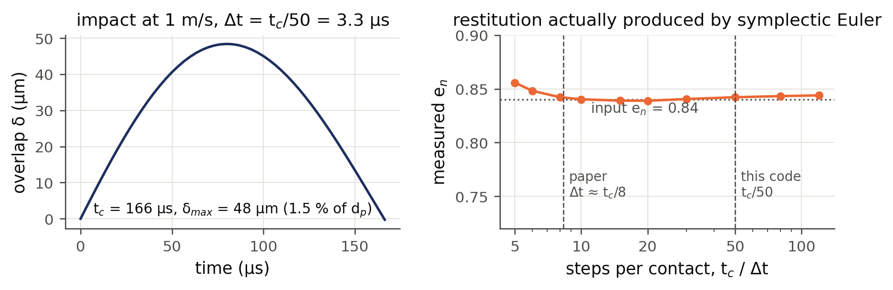
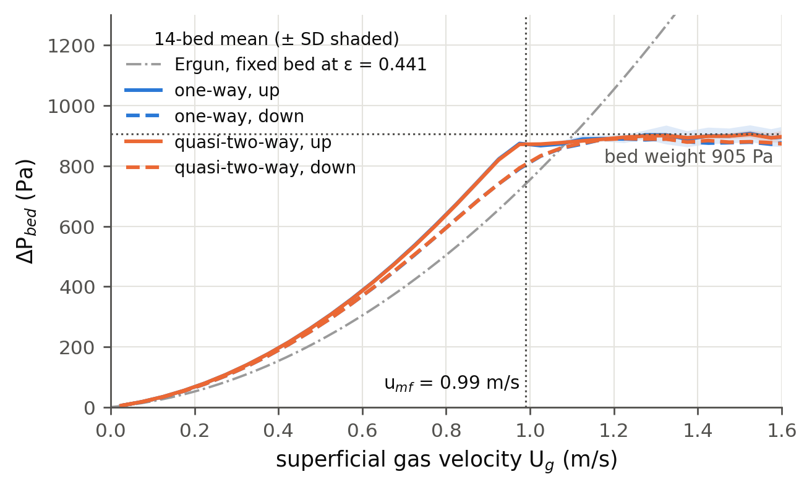
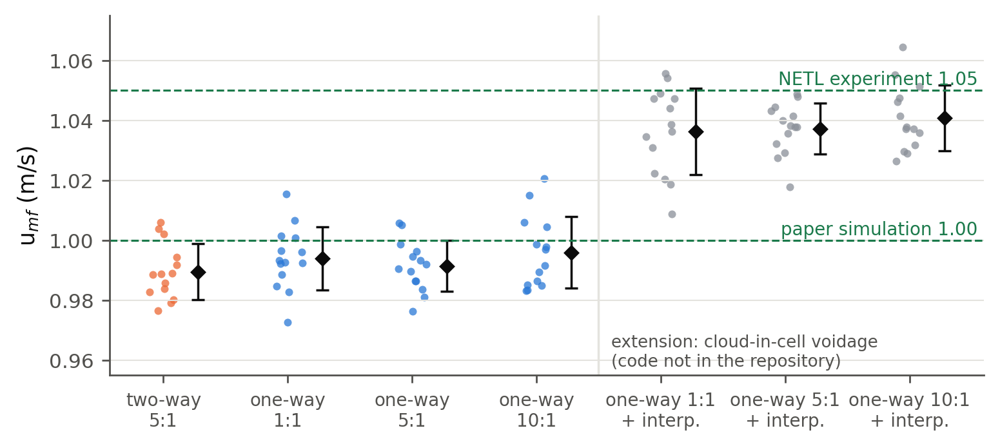
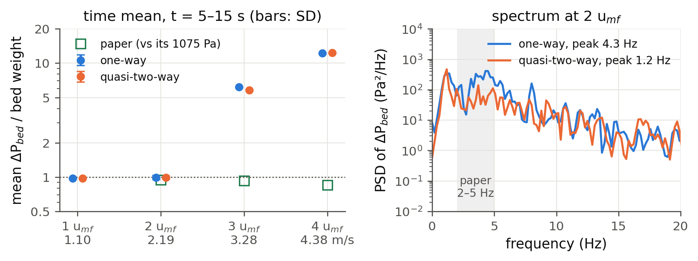
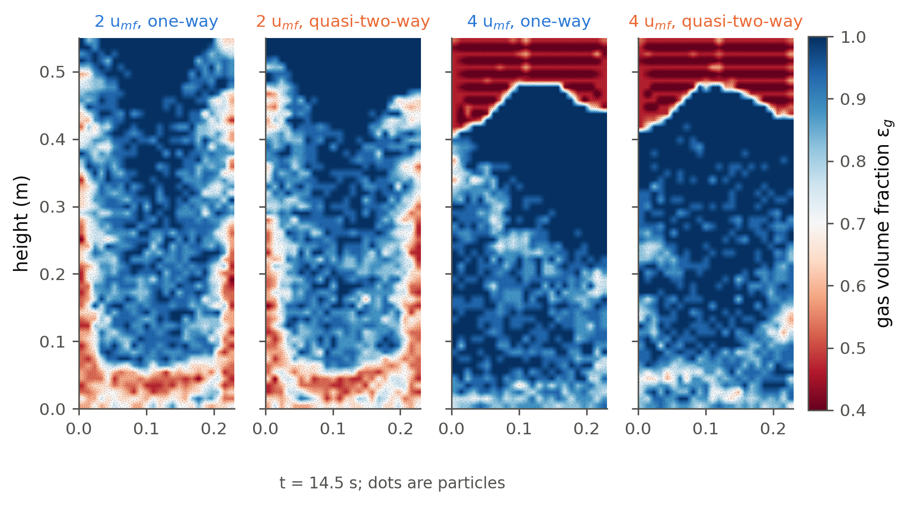
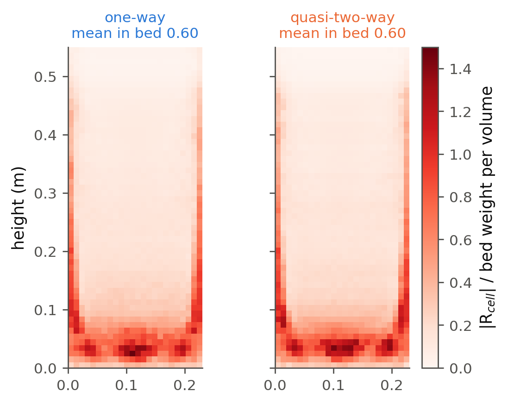

| Question | How much of Liu & van Wachem's CFD-DEM results can a DEM code written from scratch in Python reproduce if the gas is treated in one dimension instead of being solved as a 3-D flow? |
| System | The NETL SSCP particles (3.256 mm, 1131 kg/m³, Geldart D) in a 0.23 m wide, one-particle-thick (2-D monolayer) bed: 3,380 particles, settled height 0.146 m, bed weight 905 Pa per unit area. |
| Method | Soft-sphere DEM (paper's contact parameters) in Python + Numba, Gidaspow drag on a 24 × 56 grid of 3 dp cells. Two gas models: one-way, ug = Ug/εg, and quasi-two-way, ug = (Ug − qs)/εg. No gas momentum equation. |
| Runs | 28 velocity ramps (14 beds × 2 couplings, plus 70 more ramps testing update ratio and voidage interpolation) and 8 constant-velocity holds of 15 s at 1, 2, 3 and 4 umf. |
| Reproduced | umf = 0.990 ± 0.009 m/s (paper 1.00, experiment 1.05); plateau pressure drop equal to the bed weight; mean ΔP at 1 and 2 umf; one-way pressure-fluctuation frequency in the paper's 2–5 Hz band. |
| Not reproduced | Overshoot and hysteresis in the ΔP–Ug curve; ΔP fluctuation size; discrete bubbles at 2 umf; any valid state at 3 and 4 umf, where the bed lifts as a plug and ΔP reaches 6× and 12× the bed weight. |
| Main message | Integral quantities near umf follow from a force balance and come out right even with a 1-D gas. Anything that needs gas to flow around particles (bubbles, bypass, fluctuations) needs the gas momentum equation, and adding the solids flux to the gas velocity does not supply it. |
The reference paper runs a full CFD-DEM model of the NETL Small Scale Challenge Problem: every particle is tracked with Newton's laws, and the gas is solved on a grid with volume-averaged Navier–Stokes equations, two-way coupled through drag. It then scores the model against experiment on pressure drop, minimum fluidization velocity, bubbles and particle velocities.
Our aim was narrower. The proposal set out to rebuild the particle side of that model from scratch, in Python, with the paper's particle and contact parameters, and to replace the gas solver with the simplest treatment that can still fluidize a bed: a prescribed superficial velocity turned into a local gas velocity through the voidage. The point was to see how far that gets, to measure the run-to-run scatter, and to find exactly where it stops working. Read this way, the project asks three questions:
The paper's bed is pseudo-2-D: 0.23 m wide and 0.075 m (23 dp) deep. Ours keeps the width and the
particles but is truly two-dimensional: one layer of spheres, one diameter thick, with no front or back walls. All
material and contact values come from the paper's Table 1 through a single file, params.py.
| Property | Paper (3-D) | This work (2-D monolayer) | Comment |
|---|---|---|---|
| dp, ρp | 3.256 mm, 1131 kg/m³ | same | |
| ρg, μg | 1.21 kg/m³, 1.8 × 10⁻⁵ Pa·s | same | |
| kn, kt, en, μ | 3654, 1044 N/m, 0.84, 0.35 | same | kt/kn = 2/7 |
| Bed size | 0.23 × 0.075 × 1.22 m | 0.23 m × 0.55 m × 1 dp | hard ceiling at 0.55 m |
| Particles | 92,547 | 3,380 (52 rows × 65) | settled by gravity from a lattice |
| Settled height, εmf | 0.167 m, 0.42 | 0.146 m, 0.432–0.452 (bed 7: 0.441) | 2-D packs looser |
| Bed weight / area | 1075 Pa | 905 Pa | shorter bed, see box |
| Fluid grid | 22 × 7 × 114, ≈ 3.2 dp | 24 × 56, 9.6 × 9.8 mm ≈ 3 dp | |
| Time steps | DEM 20 µs, gas 100 µs | DEM 3.33 µs; voidage every 5 steps | see §3.5 |
| Gas phase | VANS equations, 3-D | no gas equations; 1-D velocity rule | the main difference |
Everything is plain Python with the inner loops compiled by Numba (@njit). One DEM step costs about
2.5 ms for 3,380 particles, so a 15 s run is 4.5 million steps and takes about 3 hours.
sim.step(). Unlike the paper's loop there is no
gas solve: the voidage field (and, for quasi-two-way, the row solids flux) is the only information passed from
particles to "gas", and nothing is passed back except drag.Each particle obeys Newton's second law with gravity, contact forces from neighbours and walls, and drag:
Compared with the paper's Eq. (3), two terms are missing. There is no separate pressure-gradient force −Vp∇p, because the Ergun branch of β is used in its total-force form (it already contains the support the paper splits between drag and pressure). And there is no rotation: the tangential force is a Coulomb-capped dashpot with no history spring, and the rotational equation diverged at this stiffness when we tried it, so torque was left out. Drag acts only vertically, since the 1-D gas has no horizontal velocity.
Contacts use the same linear spring–dashpot–slider as the paper. The damping follows from the restitution coefficient, and the time step from the contact time:
| Derived quantity (own calculation) | Value | Comment |
|---|---|---|
| m; meff = m/2 | 2.04 × 10⁻⁵ kg; 1.02 × 10⁻⁵ kg | same as paper |
| ζ; ηn | 0.055; 0.0214 N·s/m | ηt = ηn |
| tc; Δt | 166 µs; 3.33 µs | 50 steps per contact (paper ≈ 8) |
| Max overlap at 1 m/s | 48 µm = 1.5 % of dp | soft spring, small overlaps |

β is the Gidaspow closure, written for the interstitial slip ug − vp so that the pressure gradient is β(ug − us):
Substituting the superficial velocity U = εgu into Ergun gives the εg² and εg denominators above. Leaving that factor out was the first bug in the project and made umf 60 % too high; Checkpoint 2a (§3.6) now tests it. The voidage counts particle volume in each cell as a slab one diameter thick, εg = 1 − ΣVp/(Δx Δy dp), clamped to [0.36, 1], which puts a close-packed monolayer at about 0.46 instead of the areal value of about 0.2 that the correlations cannot handle.
The paper solves gas continuity and momentum in every cell (its Eqs. 1–2). We solve neither. The gas velocity in a cell is set by a rule:
The quasi-two-way rule is 1-D volume continuity, εgug + εsvs = Ug, applied to each row of cells. When solids in a row move up, less gas has to pass through them, and vice versa. With every particle at rest it reduces exactly to the one-way rule (Checkpoint 4a). In both models the bed pressure drop is not solved for but recovered from the total drag, ΔPbed = ΣFd/(W dp). Neither model lets gas move sideways, and neither has a pressure field that differs across a row.
These run in about 30 s (verify.py) and were repeated after every change to the force code.
Checkpoint 1b alone caught three sign errors during development.
| # | Test | Pass criterion | Catches |
|---|---|---|---|
| 1a | Binary head-on collision | en within 2 % of input | damping, time step |
| 1b | Gravity settling, no gas | KE decays monotonically to < 10⁻⁵ J | sign errors in any force |
| 2a | β algebra | β·u ≡ Ergun ΔP/L | superficial/interstitial mix-ups |
| 2b | Frozen lattice aligned with cells | ΣFd/(W dp L) = Ergun | voidage bookkeeping |
| 3 | Fluidized plateau | mean ΔP within 10 % of bed weight | drag summation, mass |
| 4a–d | Volume-flux coupling | at rest ≡ one-way to 10⁻¹²; flux and force to 10⁻⁹ | qs bookkeeping, slip sign |
| Quantity | Procedure |
|---|---|
| umf | Descending branch of the ramp only. Fixed-bed part fitted with aU + bU² (Ergun form), plateau with a constant; umf is the intersection. Repeated on 14 beds per variant; variants compared with paired t-tests on the same beds. |
| Pressure drop | ΣFd/(W dp) at 50 Hz; mean and SD over 5–15 s, divided by the bed weight. |
| Spectrum | Welch PSD of the ΔP signal (256-sample segments, 0.2 Hz resolution); peak frequency. |
| Flow structure | Voidage field and particle positions at t = 14.5 s, the paper's Fig. 5 time. |
| Momentum residual | Per cell, the drag that a row-uniform pressure gradient cannot balance (§4.4), time-averaged over 5–15 s. |
| Quantity | This work vs reference | Verdict |
|---|---|---|
| umf | 0.990 ± 0.009 m/s (quasi-two-way), 0.991 ± 0.008 (one-way) vs 1.00 paper, 1.05 experiment | Good (−1 %, −6 %) |
| Plateau ΔP | 98.1 % of bed weight in the ramps | Good |
| ΔP–Ug shape | No overshoot (paper ≈ 1130 Pa at 0.8 m/s); ≈ 10 Pa hysteresis vs ≈ 100 Pa; fixed-bed ΔP rises later (0.31 vs ≈ 0.51 of weight at 0.5 m/s) | Partial |
| Coupling effect on umf | Quasi-two-way − one-way = −0.2 % (95 % CI −0.9 to +0.5 %, p = 0.55) | None detectable |
| Update ratio 1 : 1 – 10 : 1 | All differences < 0.6 %, p ≥ 0.29 | None detectable |
| Mean ΔP at 1, 2 umf | 0.97 and 0.99 × weight vs paper 0.94 × at 2 umf | Good |
| ΔP fluctuations, 2 umf | SD 39 / 28 Pa vs swings of 500–1800 Pa in the paper | Far too small |
| Dominant frequency | 4.3 Hz one-way (paper 2–5 Hz); 1.2 Hz quasi-two-way | One-way only |
| Flow structure, 2 umf | Dense base, solids rising at the walls round one large central void; paper has discrete bubbles | Wrong |
| 3 and 4 umf | Bed lifts as a plug to the ceiling; ΔP = 6.2 / 5.8 × and 12.2 / 12.3 × weight vs 0.93 and 0.85 × | Invalid state |
| Gas momentum balance | Mean residual 0.60 of the bed weight per volume inside the bed, up to 1.5; zero in the paper by construction | Not conserved |

The pressure drop rises as the gas squeezes through the packed bed, levels off at the bed weight once the bed is supported, and stays there. Read from the descending branch as in the paper, umf is 0.990 m/s for the quasi-two-way model and 0.991 m/s for one-way, 1 % below the paper's simulation and 6 % below the experiment. The bed-to-bed standard deviation is about 0.01 m/s, so 14 beds pin the mean to ±0.005 m/s.
Two features of the paper's curve are missing. There is no overshoot on the way up, probably because our bed has no front and back walls for particles to wedge against and no rotation to lock neighbours together. The hysteresis is ten times smaller, which fits a bed with little to unlock. Our umf also sits 11 % below Ergun at the bed's own voidage, because the simulated curve runs above Ergun before umf. A likely cause is that drag is summed over cells whose voidage varies around the mean, and β rises steeply in the denser cells; we did not test this.

Figure 4 is the clearest result of the project. Neither the coupling nor the update ratio matters for umf; the way voidage is computed does. That is a warning against reading agreement with experiment as validation: the interpolated variants land within 1 % of the experiment, but only because one discretisation choice happens to move the answer that way.

At 1 and 2 umf the mean pressure drop is 0.97 and 0.99 times the bed weight, which is the correct answer for a fully supported bed. The paper's values fall below the weight as velocity rises (0.94, 0.93, 0.85), which its authors tentatively link to gas bypassing the bed in large bubbles, something our model cannot do. The fluctuations, however, are an order of magnitude too small: a standard deviation of 30–40 Pa against swings of hundreds of pascals in the paper. In the paper those swings come from bubbles forming and erupting. The one-way spectrum still peaks at 4.3 Hz, inside the paper's band, so some bed-scale oscillation of the right period exists; in the quasi-two-way run the solids-flux feedback damps it and the peak moves to 1.2 Hz.

At 2 umf the bed fluidizes: a dense layer sits on the distributor, solids travel up along both walls, and the centre is dilute. The paper shows something different, discrete bubbles that form near the distributor, grow and rise through a dense emulsion. Our bed has no emulsion with bubbles in it. At 3 and 4 umf it is worse: within two seconds the bed is carried to the top of the domain as a single packed plug and pressed against the ceiling, and the "pressure drop" climbs to 6 and 12 times the bed weight. Both couplings do the same.
The paper's gas momentum equation gives each cell its own pressure gradient, so the drag in every cell is balanced locally. Our models have no pressure field. The most generous reading is a single vertical pressure gradient per row, which spreads the row's drag over its cells in proportion to their gas fraction. The residual is what that leaves unbalanced:

Inside the bed, drag equal to 60 % of the local bed weight is not balanced by any pressure gradient. The largest residuals are in the dense regions: the wall streams and the layer on the distributor. In the paper those regions would raise the local gas pressure and push gas sideways into the dilute centre; that sideways flow is what lets bubbles form and gas bypass the bed. Here it cannot happen, which ties together the failures in §4.2 and §4.3.
A bubble exists because gas prefers the path of least resistance. Where the bed is locally dilute, the drag per unit gas flow is small, so the pressure field drives more gas there, which pushes particles aside and makes it more dilute still. That instability needs two things: a pressure field that can differ across the bed, and gas that can move sideways to follow it. Our rule fixes the superficial gas velocity in every cell of a row to the same value, so a dilute cell gets no more gas than a dense one, and the feedback never starts. What forms instead is a slower circulation driven by the walls.
Above umf the excess gas in a real bed passes through as bubbles, and the emulsion stays near minimum-fluidization conditions (two-phase theory). With no bubbles, all the gas has to go through the particles. At 3 umf the drag on a uniform bed is then several times its weight, so the whole bed accelerates upward together until something stops it. Our "something" is the ceiling, and the measured ΔP is the force the ceiling needs to apply, which the Ergun check in §4.3 confirms.
Near umf the particles barely move, so qs ≈ 0 and the two rules agree; this is built into the model (Checkpoint 4a). Once fluidized, qs in a row is the net of solids rising at the walls and falling elsewhere. In a closed batch bed those nearly cancel, so the correction to ug is small on average and only changes the dynamics (the 1.2 Hz peak), not the mean.
Five DEM steps are 16.6 µs. In that time a particle moving at 1 m/s travels 17 µm, about 0.2 % of a fluid cell, so the voidage field barely changes between updates. Even 10 : 1 is far below the time particles take to cross a cell. The paper's ratio comes from a gas solver's stability limit; here it only staggers a bookkeeping step.
| Symbol | Meaning | Symbol | Meaning |
|---|---|---|---|
| εg, εs | gas, solid volume fraction | umf | minimum fluidization velocity |
| Ug | superficial gas velocity | ug, vp | interstitial gas, particle velocity |
| qs | row-averaged solids volume flux | β | inter-phase momentum exchange coefficient |
| kn, kt | normal, tangential stiffness | ηn, ζ | normal damping, damping ratio |
| en | normal restitution coefficient | tc, Δt | contact duration, DEM time step |
| W, Δx, Δy | bed width, fluid cell size | Rcell | unbalanced drag per cell volume |
| ΔPbed | bed pressure drop, ΣFd/(W dp) | PSD | power spectral density |
All figures are original, drawn from this project's run outputs by
presentation/explainer/make_figs.py. Numbers marked "own calculation" come from params.py and
the correlations in drag.py. Paper values are read from Liu & van Wachem (2019).